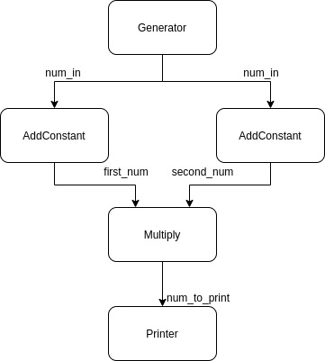

Getting Started
A simple example
We will build a graph with the following topology.

The corresponding code to build that graph would be:
using Tissue
mutable struct SourceCalculator
count::Int64
SourceCalculator() = new(0)
end
function Tissue.process(c::SourceCalculator)
c.count += 1
if c.count > 5
# Indicates that the data stream is closed.
# This is the last time that the function will be called
return nothing
end
return c.count
end
struct AddConstantCalculator
constant::Int
end
function Tissue.process(c::AddConstantCalculator, num_in::Int)::Int
return num_in + c.constant
end
struct MultiplyCalculator end
function Tissue.process(c::MultiplyCalculator, first_num::Int, second_num::Int)::Int
return first_num * second_num
end
struct PrinterCalculator end
function Tissue.process(c::PrinterCalculator, num_to_print)
println(num_to_print)
end
@graph NumberGraph begin
# 1. Declare calculators.
@calculator source = SourceCalculator()
@calculator add0 = AddConstantCalculator(0)
@calculator add42 = AddConstantCalculator(42)
@calculator mult = MultiplyCalculator()
@calculator printer = PrinterCalculator()
# 2. Declare the streams which connect the calculators together
@bindstreams add0 (num_in = source)
@bindstreams add42 (num_in = source)
@bindstreams mult (first_num = add0) (second_num = add42)
@bindstreams printer (num_to_print = mult)
end
graph = NumberGraph()
start(graph)
wait_until_done(graph)
# output
43
88
135
184
235Feel free to run the code yourself. Remember that in Julia, you control the number of threads that get spawned when you run the program. See the --threads command line option. To run the program with as many threads as your computer has CPUs, use
$ julia -t auto my_program.jlAlright, back to the example. There's a lot going on here, so let's parse through this example one bit at a time.
using TissueThis brings the functions and macros we are going to need into scope:
start()launches all the calculators, each in its own task, and starts pulling data from the source calculatorwait_until_done()blocks the main thread until the source stops generating data, and all calculators are done processing.@graphdefines a graph, concretely astruct NumberGraph, with a topology as described in thebegin ... endblock.@calculatordeclares a new node in the graph corresponding to a calculator object of any type.@bindstreamsdeclares the edges in the graph. To define an edge, one specifies the output of a calculator with a named input stream of another calculator.
mutable struct SourceCalculator
count::Int64
SourceCalculator() = new(0)
endThis defines a calculator type which we will use to instantiate our source calculator. The source calculator is the one and only node in the graph which has no input streams. It is equally an error to instantiate more than one, or none at all. As you can see, there's nothing special about the type. More on the source calculator when we get to the graph definition.
function Tissue.process(c::SourceCalculator)
c.count += 1
if c.count > 5
# Indicates that the data stream is closed.
# This is the last time that the function will be called
return nothing
end
return c.count
endThis is the crux of it all. We specify how a calculator of type X goes from input to output by adding a method to the Tissue.process() function; that is, the process() function that lives in the Tissue module. The convention is that the first argument to the function needs to be of type X, and the rest of the arguments define the streams which the calculator accepts. In this case, there are no streams, because we intend to use this calculator as our source calculator.
Note that more than one Tissue.process(c::X, ...) can be implemented. This is how you let the same calculator accept different streams, depending on the graph it is to be used in.
struct AddConstantCalculator
constant::Int
end
function Tissue.process(c::AddConstantCalculator, num_in::Int)::Int
return num_in + c.constant
endWe define a new calculator type called AddConstantCalculator. There is one difference with the source calculator though: its process() method accepts one stream named num_in. This is key. The name of the arguments in a process() method matter. They name a stream that will later be used when defining the graph topology with the @graph and @bindstreams macros. More on this later.
Here, we specified the type of the stream and the return type of process() for documentation purposes; they are by no means required.
struct MultiplyCalculator end
function Tissue.process(c::MultiplyCalculator, first_num::Int, second_num::Int)::Int
return first_num * second_num
endWe define a new calculator type called MultiplyCalculator, as well as a process() which now takes 2 stream arguments. This is interesting. Remember that all calculators in the graph run concurrently. Then, both values are going to arrive at this calculator at different points in time. As a result, Tissue.jl buffers the data until at least one packet per stream has arrived, after which it calls this process() method. This complexity taken care for you is one of the perks of Tissue.jl.
struct PrinterCalculator end
function Tissue.process(c::PrinterCalculator, num_to_print)
println(num_to_print)
endCome to our final calculator type, PrinterCalculator. Nothing new here, except to show that really, all computation, including I/O calls, happens within calculators.
@graph NumberGraph beginFinally, we get to the graph definition. The @graph macro takes 2 arguments: The name of the type, NumberGraph, and a code block in which we use @calculator and @bindstreams to define the topology; that is, the nodes and edges of the graph.
# 1. Declare calculators.
@calculator source = SourceCalculator()This defines a new calculator object of type SourceCalculator, and source is the variable that refers to it. This looks like and is a simple variable assignment as you know it, using the SourceCalculator struct constructor that you defined. The default one in this case.
@calculator add0 = AddConstantCalculator(0)
@calculator add42 = AddConstantCalculator(42)
@calculator mult = MultiplyCalculator()
@calculator printer = PrinterCalculator()Similarly, this defines four new calculator objects. Note that add0 and add42 are two calculators of the same type.
# 2. Declare the streams which connect the calculators together
@bindstreams add0 (num_in = source)We get to our first @bindstreams declaration. The purpose of @bindstreams is to encode, for each calculator in our graph, where the data comes from for each stream. Here, the add0's input stream called num_in will have its data come from the output stream of source. The parentheses around num_in = source are optional; we add them for clarity. Visually, this adds an edge in the graph from source to add0. As a reminder, we declared the stream num_in when we defined the process(c::AddConstantCalculator, num_in::Int) method.
@bindstreams add42 (num_in = source)This declaration is analogous to the previous one.
@bindstreams mult (first_num = add0) (second_num = add42)The process() method that we defined for the MultiplyCalculator defines two streams: first_num and second_num. Therefore, the @bindstreams declaration must bind the output of a calculator to each of them. By now, you probably figured out what this does: it takes the output of add0 and sends it in mult's first_num stream, and similarly for add42 in the second_num stream.
@bindstreams printer (num_to_print = mult)
endThis is the final @bindstreams declaration, which completes the graph definition! We defined all of our calculators and how they interact. Note that we didn't bind any stream to source, which tells Tissue.jl that this is the calculator we intend to use as our source calculator.
graph = NumberGraph()We now get to actually use our graph! The @graph macro created a struct NumberGraph with a default constructor. We thus instantiate a new graph simply by creating an object of type NumberGraph.
start(graph)This call starts every calculator in its own task and starts pulling data from the source calculator. It returns immediately.
wait_until_done(graph)Finally, this blocks the main thread until the graph is done. In our case, this happens when our source returns nothing, indicating that it is done generating data. wait_until_done will wait until all the calculators are finished processing the last packet, cleanup and return.
That's all folks! Now, there's a thing or two we omitted in this example, so if you're hungry for more, follow me on to a more complicated example.
A more useful example
Let's look at a more realistic example. We will write a graph which reads from the camera, runs a face detector on the image, and renders a box around the detected faces. At any time, the user can select the video feed window on their desktop and press any key to stop the graph. We will convert this example from OpenCV into a Tissue.jl graph.
using Tissue
using OpenCV
cv = OpenCV
struct CameraCalculator
cap::cv.VideoCaptureAllocated
function CameraCalculator()
cap = cv.VideoCapture(Int32(0))
new(cap)
end
end
function Tissue.process(calc::CameraCalculator)
ok, img = cv.read(calc.cap)
ok ? img : nothing
end
function Tissue.close(calc::CameraCalculator)
cv.release(calc.cap)
end
struct FaceDetectionCalculator
net
function FaceDetectionCalculator()
net = cv.dnn_DetectionModel(
"assets/opencv_face_detector.pbtxt",
"assets/opencv_face_detector_uint8.pb",
)
size0 = Int32(300)
cv.dnn.setInputMean(net, (104, 177, 123))
cv.dnn.setInputScale(net, 1.0)
cv.dnn.setInputSize(net, size0, size0)
new(net)
end
end
function Tissue.process(calc::FaceDetectionCalculator, in_frame)
classIds, confidences, boxes =
cv.dnn.detect(calc.net, in_frame, confThreshold = Float32(0.5))
(confidences, boxes)
end
struct FaceRendererCalculator end
function Tissue.process(calc::FaceRendererCalculator, in_frame, confidences_and_boxes)
confidences, boxes = confidences_and_boxes
out_frame = deepcopy(in_frame)
for i in 1:size(boxes,1)
confidence = confidences[i]
x0 = Int32(boxes[i].x)
y0 = Int32(boxes[i].y)
x1 = Int32(boxes[i].x+boxes[i].width)
y1 = Int32(boxes[i].y+boxes[i].height)
cv.rectangle(out_frame, cv.Point{Int32}(x0, y0), cv.Point{Int32}(x1, y1), (100, 255, 100); thickness = Int32(5))
label = "face: " * string(confidence)
lsize, bl = cv.getTextSize(label, cv.FONT_HERSHEY_SIMPLEX, 0.5, Int32(1))
cv.rectangle(out_frame, cv.Point{Int32}(x0,y0), cv.Point{Int32}(x0+lsize.width, y0+lsize.height+bl), (100,255,100); thickness = Int32(-1))
cv.putText(out_frame, label, cv.Point{Int32}(x0, y0 + lsize.height),
cv.FONT_HERSHEY_SIMPLEX, 0.5, (0, 0, 0); thickness = Int32(1), lineType = cv.LINE_AA)
end
out_frame
end
struct ImageDisplayCalculator end
function Tissue.process(calc::ImageDisplayCalculator, rendered_frame; graph::Graph)
cv.imshow("detections", rendered_frame)
if cv.waitKey(Int32(1)) >= 0
stop(graph)
end
end
@graph FaceGraph begin
@calculator source = CameraCalculator()
@calculator face_detector = FaceDetectionCalculator()
@calculator renderer = FaceRendererCalculator()
@calculator displayer = ImageDisplayCalculator()
@bindstreams face_detector (in_frame = source)
@bindstreams renderer (in_frame = source) (confidences_and_boxes = face_detector)
@bindstreams displayer (rendered_frame = renderer)
end
function main()
graph = FaceGraph()
start(graph)
wait_until_done(graph)
println("Thanks for listening!")
end
main()You can actually run this yourself! Just make sure you install the OpenCV package first (simply type add OpenCV on julia's pkg REPL).
We will focus on the bits that were not covered in the previous example.
function Tissue.close(calc::CameraCalculator)
cv.release(calc.cap)
endTo clean up resources acquired in a calculator constructor when the graph stops, implement Tissue.close(::CalculatorType) with the corresponding calculator type. It will be called in wait_until_done(graph) after all the calculators are done running.
function Tissue.process(calc::FaceRendererCalculator, in_frame, confidences_and_boxes)
confidences, boxes = confidences_and_boxes
out_frame = deepcopy(in_frame)
for i in 1:size(boxes,1)
...
end
out_frame
endThe process() method for the FaceRendererCalculator highlights an important fact: data coming from the input streams could be accessed by multiple threads simultaneously since calculators run in their own task. Therefore, we treat the data coming from input streams as immutable. Since we want to mutate it here, we first make a deepcopy.
function Tissue.process(calc::ImageDisplayCalculator, rendered_frame; graph::Graph)
cv.imshow("detections", rendered_frame)
if cv.waitKey(Int32(1)) >= 0
stop(graph)
end
endFinally, the process() method for ImageDisplayCalculator introduces two new concepts. First, a reference to the current graph object can be obtained by adding a graph keyword argument to the process() method. In this case, we need it to call Tissue.stop(graph), the second new concept. Tissue.stop(graph) does as the name suggests: it stops the graph. This means a few things: the source calculator stops being called for new data packets, all packets that were generated are allowed to be processed by all calculators. After no more packets remain in the graph, if the main thread is blocked on a call to Tissue.wait_until_done(graph), Tissue.close(calculator) is called on every calculator. Although there is no race condition here: if the main thread calls Tissue.wait_until_done(graph) only after all calculators are done, Tissue.close(calculator) is also called on all calculators.
And that's pretty much it! You should be good to go build awesome graphs now.